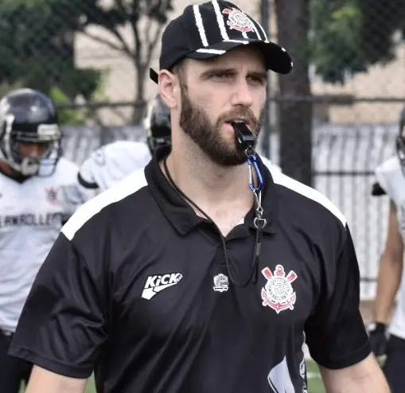

Lee Wells | WDD 130
Hey there! My name is Lee Wells and I am from Orlando, Florida, but I currently live in São Paulo, Brazil. I have also lived in the states of West Virginia and Tennessee, and served my mission in Colorado. I have been married to my wife for 7 years. We were sealed in the Washington, D.C. Temple and we have 2 daughters, ages 5 and 3, with one more girl on the way! I have a Bachelor's degree in Business Administration from Carson-Newman University, where I was a Quarterback and, later, Tight End on the football team and I also threw shotput, discus, and javelin on the track and field team. I am currently working towards a second Bachelor's degree in Software Development at BYU-I. After moving to Brazil, I was the Quarterback and Head Coach of Corinthians Steamrollers Futebol Americano for five years, stepping down in December 2024 to pursue the aforementioned degree.